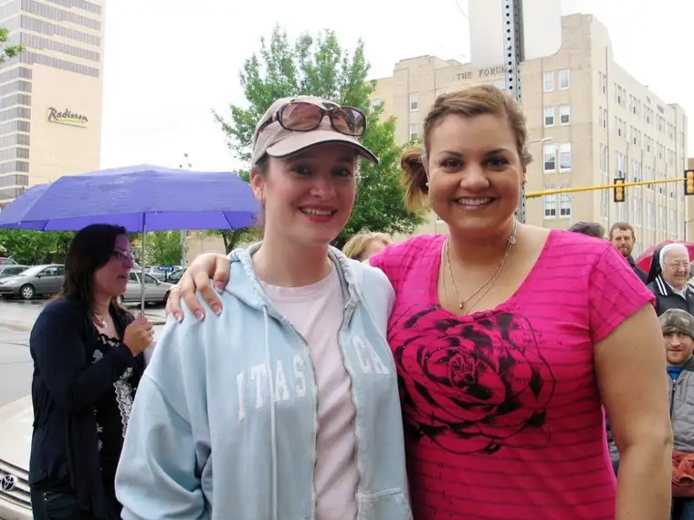

 |
| Me and Abby Johnson, Downtown Fargo, ND, June 2011 |
{kind=link}
For the past year, I’ve listened with rapt curiosity about a new and vibrant force on the pro-life scene. Her name is Abby Johnson. Some of you might know her as the best-selling author of Unplanned. For those of you who have not heard of Abby, she’s a former Planned Parenthood director who, upon observing an ultrasound-assisted abortion (through which a 13-week-old boy actively avoided the probe, backed up until there was nowhere to go, and inevitably lost his life) made the decision to leave her position and the pro-choice side altogether.
I’ve been captivated by Abby’s story because, like me, she’s a mother who wants to do the right thing by her child and all children, not to mention humanity. And she has a deep compassion for women who struggle with big decisions like unplanned pregnancy. She’s also a seeker of truth and goodness. Abby’s decision to volunteer for Planned Parenthood years ago stemmed from her compassion and desire to seek truth and goodness. She believed she’d found those very things in her new-found mission at Planned Parenthood. She bought into the idea that the organization existed as a nonprofit to help women and babies, and that the crazy people out on the sidewalk protesting the abortions had it all wrong.
But as Abby recently shared with a standing-room only crowd at the Radisson here in Fargo, ND, those sidewalk folks eventually turned more and more prayerful, and when that happened, everything changed. Instead of the surrounding residents feeling sorry for the abortion facility workers and clients, they began looking at things from a different angle. And as the public began to question what was truly going on in that “clinic,” Abby’s heart began to slowly question it as well. In particular, there seemed to be a push for “more and more abortions” because money was at stake. That was a huge red flag for Abby. Wasn’t the job of Planned Parenthood to work toward eliminating abortions? Wasn’t it a nonprofit? That’s what had sold her on the whole thing after all.
There was one gal in particular — a young Catholic woman named Elizabeth McClung — who had tried talking with Abby through the fence that divided the sidewalk and abortion facility, had prayed for Abby, and left her, at one point, a card with a Scripture verse and some flowers. Abby kept the card for two years. She was a Christian, after all, and something about those small gestures had resonated, even if she wasn’t yet ready to absorb all of what she would come to understand.
But that fateful day watching the ultrasound screen changed everything, and Abby, a mother who knew well the excitement of looking at an ultrasound screen and meeting her child for the first time, knew in an instant she couldn’t continue on her current path. The power of a visual.
What has amazed me about Abby is not just her change of heart but the rapidity of her vocalizing the change from the opposite side of the fence. There’s no doubt in my mind, especially having heard her talk in person, and having had a conversation with her, that she’s moving on the breath of the Holy Spirit. Pointing to the depth of her conversion is the fact that Abby has now joined the Catholic Church as of this past Easter.
Once truth is revealed, the path becomes clear. Abby Johnson is a living example of this, and I’ve been inspired and newly convicted about the cause. Somehow, I was fortunate to sit at her table the night of her talk here, and the next day, talk with her in front of North Dakota’s only abortion mill, where we had gathered to pray for those whose lives would be irrevocably changed that day.
Meeting Abby Johnson in person as I did was an unexpected joy. I’m hoping it’s not the only time our paths will cross. I recently interviewed Elizabeth, Abby’s flower-giving friend, on Catholic radio. I sense, through these two women and others, a revitalization in the pro-life movement. More women are seeing the truth, and saying, as Abby did a couple weeks ago, that “It’s not pro-woman to be pro-abortion. It is pro-woman to stand up for life.” She hit the nail on the head. Now, we must do what we can do to help transform hearts, through compassion and love, the very way that Abby herself was transformed.
Abby has energized me. She said that if not for the sidewalk counselors, she would not have made the switch. Their love and consistency made the difference. It’s not for everyone, but realizing how important the faces are, the presence of love, has made me think long and hard about whether I’ve been doing enough for life.
Q4U: What are you doing to stand up for life? Is it enough?